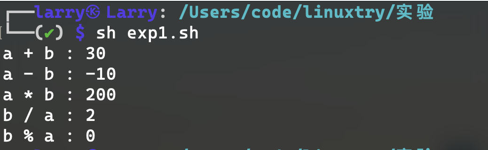
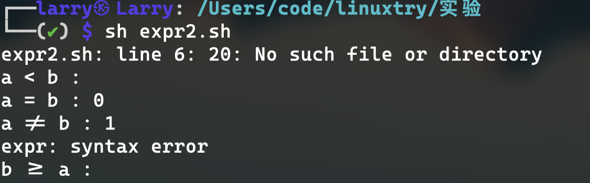
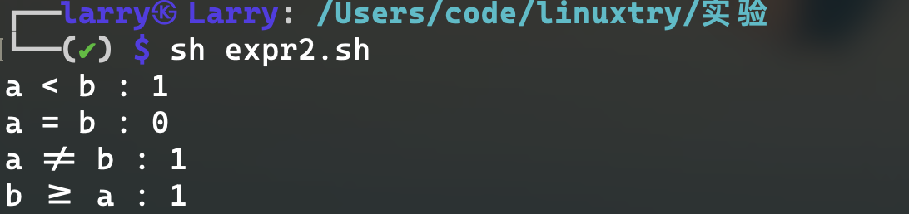
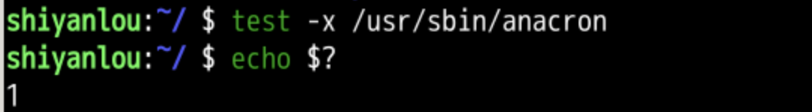
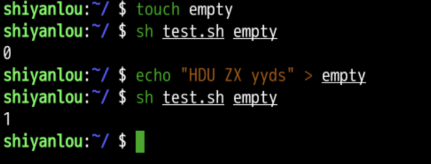

expr与test命令
表达式与运算符
1.expr命令
expr命令可以进行一些算术运算，包括加、减、乘、除等。也可以进行一些逻辑运算。
1.1 基本算术运算
1 |
|
注意：
- 计算结果赋值给变量时，要注意使用反撇号（与
~在同一个键） - 表达式和运算符之间要有空格，
$a + $b写成$a+$b不行 - 乘号（*）前边必须加反斜杠才能实现乘法运算
- 除法是取整的除法
运行结果：

1.2逻辑运算
1 |
|
原始代码的运行结果:

问题分析：
比较操作数中"
<"和">"是正则表达式正的锚定元字符，且会被shell解析为重定向符号所以需要转义或用引号包围。
更改代码
1 |
|
更改后的代码结果

1.3字符串运算
| 运算 | 表达式 | 意义 |
|---|---|---|
match |
match STRING REGEXP | STRING 中匹配 REGEXP 字符串并返回匹配字符串的长度 |
substr |
substr STRING POS LENGTH | 从 POS 位置获取长度为 LENGTH 的字符串 |
index |
index STRING SUBSTR | 杳找子字符串的起始位置 |
length |
length STRING | 计算字符串的长度 |
1 |
|
运行结果
2.test命令
2.1 运算符
test命令中逻辑运算符有两套，分为数值型和字符型，另外还有对于文件进行判断的运算符，和表达式复合的运算符。
数值测试
| 参数 | 说明 |
|---|---|
| -eq | 等于则为真 |
| -ne | 不等于则为真 |
| -gt | 大于则为真 |
| -ge | 大于等于则为真 |
| -lt | 小于则为真 |
| -le | 小于等于则为真 |
字符串测试
| 参数 | 说明 |
|---|---|
| = | 等于则为真 |
| != | 不相等则为真 |
| -z 字符串 | 字符串的长度为零则为真 |
| -n 字符串 | 字符串的长度不为零则为真 |
文件测试
| 参数 | 说明 |
|---|---|
| -e 文件名 | 如果文件存在则为真 |
| -r 文件名 | 如果文件存在且可读则为真 |
| -w 文件名 | 如果文件存在且可写则为真 |
| -x 文件名 | 如果文件存在且可执行则为真 |
| -s 文件名 | 如果文件存在且至少有一个字符则为真 |
| -d 文件名 | 如果文件存在且为目录则为真 |
| -f 文件名 | 如果文件存在且为普通文件则为真 |
| -c 文件名 | 如果文件存在且为字符型特殊文件则为真 |
| -b 文件名 | 如果文件存在且为块特殊文件则为真 |
2.2 求值
通过test命令执行成功与失败对应逻辑表达式的值的真与假来获得
命令执行成功的时候，
$?特殊变量的值为0，否则为1
【试一试1】代码
1 | a=1 |
test $a = $b=是字符串比较 “01”不等于“1” ，所以逻辑表达式的值为1est $a -eq $b-eq是数值是否相等， 01=1 ，所以逻辑表达式的值为0test $a -lt $c数值比较， 1<2 ，所以逻辑表达式的值为0est -n $a-n字符串长度nonzero， a非空， 所以逻辑表达式的值为0est -z $a-z字符串长度zero , a非空， 所以逻辑表达式的值为1est -n $f-n因为$f没有用引号括起来,所以即使f为空 但逻辑表达式的值为0test -z $ff空 逻辑表达式的值为0
【试一试2】代码
在蓝桥云的实验楼上的代码进行截图
- 判断文件
/usr/sbin/anacron是否存在，且具有执行权限。

判断
/dev/sda磁盘是否是块设备，是块设备则为真。判断变量
a的值是否在18到28之间（含18和28）判断文件是否是空文件，是空文件则为真。
1
2
3
4
5
6
7file=$1
test -e "$file" #判断文件是否存在
Isexist=$? #记录文件是否存在的信号
test -s "$file" #判断文件是否有字符
Notempty=$?
test $Isexist -eq 0 -a $Notempty -eq 1 # 前面的0表示文件存在 后面的1表示文件没内容
echo $?
bc工具
bc是一个独立的bc是一个较为完整的工具，为Bash提供了更强的计算能力，提供了完备的类似C的编程语法的计算器，可以在交互式界面、文本或管道的方式方便的进行一些运算。支持多进制转换，任意精度调整，打印控制，函数支持，逻辑控制等。
3.1 安装bc
1 | sudo apt install -y bc |
3.2 算术运算
1 | # 启动进入bc的计算环境 |
启动bc后进入了bc的环境，末行的光标等待着输入待计算的算术表达式。输入表达式后回车即会返回表达式计算结果。
bc支持的基本运算包括：
| 符号 | 作用 |
|---|---|
| + | 加法 |
| - | 减法 |
| * | 乘法 |
| / | 除法 |
| ^ | 指数 |
| % | 余数 |
其中，bc -q是启动bc之后不打印版本等信息。另外，可以看到除法仍然是取整的除法。并且表达式中，运算符两边的空格不是必须的，比较自由。
bc支持的类C语言的运算：
输入 quit ，可以退出 bc 环境。
3.3 计算精度
bc默认进行的是整数运算，除法等得到的结果都是取整之后的整数。通过调整参数scale的值，可以设定除法、求平方根等运算的计算结果的精度，即保留的小数位数。但是对于加法、乘法等不起作用。
1 | bc -q |
3.4 使用函数
(1)常用函数：
scale(n)：返回n的小数位数length(n)：返回n的位数sqrt(n)：返回n的平方根
(2)数学函数
s(x)：正弦函数(x为弧度)c(x)：余弦函数(x为弧度)a(x)：反正切函数(结果为弧度)l(x)：自然对数函数e(x)：以e为底的指数函数j(n,x)：贝赛尔函数
使用这些库函数时，bc要加上 -l 參数 (加上 -l
时，scale=20 ，即小数位数为 20 位)
3.5 使用管道
bc工具不仅仅是一个计算器一样的工具，还可以通过管道与其他命令组合使用。
双小括号
双小括号中可以使用类似C语言的表达式，((exp))的格式更符合一般使用习惯。
1 | echo $((1+3)) |
- 这种扩展计算是整数型的计算，不支持浮点型。
- 如果表达式的结果为0，那么返回的退出状态码为1，或者是"假"，而一个非零值的表达式所返回的退出状态码将为0，或者是"true"。若是逻辑判断，表达式exp为真则为1,假则为0。
- 只要括号中的运算符、表达式符合C语言运算规则，都可用在$((exp))中，甚至是三目运算符
- 作不同进位(如二进制、八进制、十六进制)运算时，输出结果全都自动转化成了十进制。
1 | echo $((16#5f)) |
- 用于算术运算比较，双括号中的变量可以不使用$符号前缀。
- 括号内支持多个表达式用逗号分开
1 | for((i=0;i<5;i++)) |
Bash中基本的for的用法应该是：
1 | for i in 0 1 2 3 4 |
也可以用在if的条件表达式中，例如：
1 | if (( i<5 )) |
中括号
中括号也可以进行整数运算。
1 | b=$[1+3] |